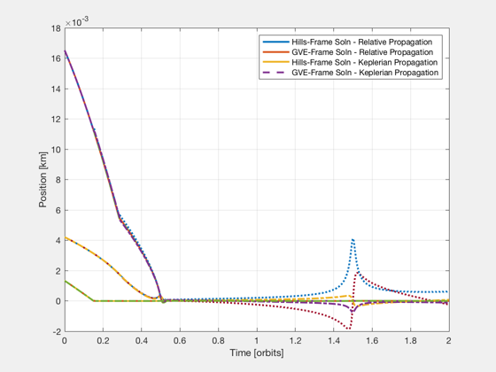
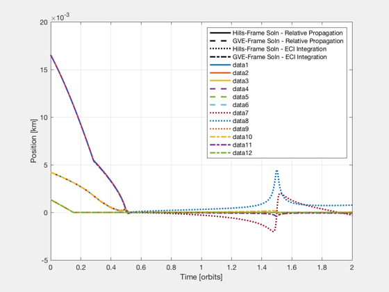
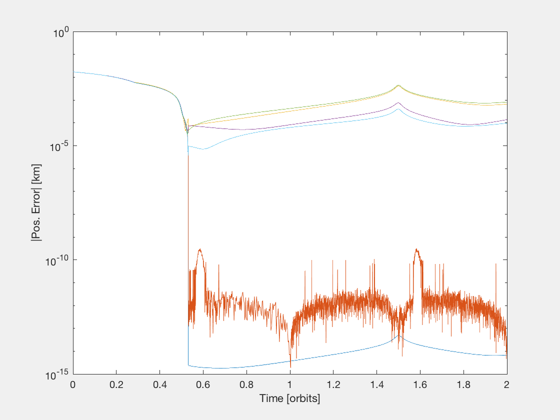

Analyze the performance of relative orbit control in eccentric orbits
This script compares the performance of two different control methods for relative orbit control in a highly eccentric orbit. The two methods compared are: - LPEccentric (relative dynamics expressed in Hills frame) - LPEccentricGVE (relative dynamics expressed with Gauss var. eqs.)
The linearization error is much higher when the relative dynamics is based in Hills frame. This results in noticable error in the controlled trajectory.
In addition, this script also compares the relative trajectories when the maneuver is simulated in different ways. The following types of simulations are compared - Discrete relative dynamics in Hills frame. - Discrete relative dynamics with differential elements using Gauss' variational equations. - Keplerian orbits patched together with impulsive delta-v's - Numerical integration in ECI frame
Since version 7. ------------------------------------------------------------------------ See also Delay, QHills, QTForm, TimeGUI, Mag, RK4TI, EccGeometry_Structure, DiscreteGVE, FFEccDiscreteHills, LPEccentric, LPEccentricGVE, ECI2Hills, FFEccDeltaElem2Hills, FFEccGoals2Hills, FFEccHills2DeltaElem, ApplyDeltaV, RVOrbGenDV, OrbRate, RVOrbGen, El2RV, M2Nu, M2NuAbs, Period ------------------------------------------------------------------------
%-------------------------------------------------------------------------- % Copyright (c) 2004 Princeton Satellite Systems, Inc. % All rights reserved. %-------------------------------------------------------------------------- % initial orbit a = 42095; i = pi/18; W = 0; w = 0; e = 0.818181000; M = pi; el0 = [a,i,W,w,e,M]; % other orbit data n = OrbRate(a); T = Period(a); nu0 = M2Nu(e,M); % initial relative state dEl0 = [1e-9, 1e-7, 1e-7, 1e-7, 1e-7, 1e-7]; xH0 = FFEccDeltaElem2Hills( el0, dEl0, 2 ); % desired relative state goals = EccGeometry_Structure; goals.y0 = 0; MF = M + 2*pi; nuF = M2NuAbs( e, MF ); xHF = FFEccGoals2Hills( e, nuF, goals, n ); dElF = FFEccHills2DeltaElem( el0, xHF, 2 ); fprintf('\nPlanning a maneuver using "LPEccentric" and "LPEccentricGVE"...\n') % plan a manuever with simplex (Hills) nS = 2000; [aC1,t1,flag1] = LPEccentric( e, n, xH0, xHF, nu0, nuF, nS ); % plan a manuever with simplex (GVE) [aC2,t2,flag2] = LPEccentricGVE( el0, dEl0', zeros(1,6)', MF, nS ); if( norm(t1-t2)>eps ) warning('Hills-based and GVE-based solutions use different time vectors'); while 1 ans = input('continue(c) or quit(q) ?','s'); switch lower(ans) case 'c' break; case 'q' return; end end else t=t1; end % extend time vector to show future orbits dt = diff(t); nOrb = 1; nSPO = round( nS*2*pi/(MF-el0(6)) ); t = [t, t(end)+linspace(dt(2),nOrb*T,nOrb*nSPO)]; aC1 = [aC1, zeros(3,nOrb*nSPO)]; aC2 = [aC2, zeros(3,nOrb*nSPO)]; N = length(t); fprintf('\nApplying the maneuver and propagating dynamics in relative frames...\n') % propagate initial state with control using FFEccDiscreteHills [xHD1,nu] = FFEccDiscreteHills( e, n, xH0, nu0, aC1, t ); % propagate initial state with control using DiscreteGVE [dEl,M] = DiscreteGVE( el0, dEl0, aC2, t ); % find delta-v's for Hills solution k = find(Mag(aC1)); dV1 = zeros(3,length(k)); dV1(1,:) = aC1(1,k).*dt(k); dV1(2,:) = aC1(2,k).*dt(k); dV1(3,:) = aC1(3,k).*dt(k); dV1Times = t(k)+dt(k)/2; % apply purely impulsive delta-v at halfway point of burn dV1Times = t(k)+dt(k); % apply purely impulsive delta-v at end of burn % find delta-v's k = find(Mag(aC2)); dV2 = zeros(3,length(k)); dV2(1,:) = aC2(1,k).*dt(k); dV2(2,:) = aC2(2,k).*dt(k); dV2(3,:) = aC2(3,k).*dt(k); dV2Times = t(k)+dt(k)/2; % apply purely impulsive delta-v at halfway point of burn dV2Times = t(k)+dt(k); % apply purely impulsive delta-v at end of burn fprintf('\nNow applying impulsive delta-vs to absolute orbit with Keplerian propagation...\n') % piece together keplerian orbits with purely impulsive delta-v's [r0,v0] = RVOrbGen( el0, t ); [r1,v1] = RVOrbGenDV( el0+dEl0, t, dV1, dV1Times ); [r2,v2] = RVOrbGenDV( el0+dEl0, t, dV2, dV2Times ); xHK1 = zeros(6,N); xHK2 = zeros(6,N); for i=1:N xHK1(:,i) = ECI2Hills( [r0(:,i);v0(:,i)], [r1(:,i);v1(:,i) ] ); xHK2(:,i) = ECI2Hills( [r0(:,i);v0(:,i)], [r2(:,i);v2(:,i)] ); end % transform element differences from GVE solution to Hills frame xHD2 = zeros(6,N); rD2 = zeros(3,N); vD2 = zeros(3,N); for i=1:N [rD2(:,i),vD2(:,i)] = El2RV( [el0(1:5),M(i)] + dEl(i,:) ); xHD2(:,i) = ECI2Hills( [r0(:,i);v0(:,i)], [rD2(:,i);vD2(:,i)] ); end figure('name','Keplerian Orbit Patches with Pure Impulsive Burns') plot(t/T,xHD1(1:3,:),'linewidth',2), hold on plot(t/T,xHD2(1:3,:),'--','linewidth',2) plot(t/T,xHK1(1:3,:),':','linewidth',2) plot(t/T,xHK2(1:3,:),'-.','linewidth',2) grid on, zoom on, xlabel('Time [orbits]') ylabel('Position [km]') legend('Hills-Frame Soln - Relative Propagation','GVE-Frame Soln - Relative Propagation',... 'Hills-Frame Soln - Keplerian Propagation','GVE-Frame Soln - Keplerian Propagation') fprintf('Position error norm between - Hills prop and GVE prop: %f km\n',norm(xHD1-xHD2)) fprintf('Position error norm between - Hills prop and Keplerian: %f km\n',norm(xHD1-xHK1)) fprintf('Position error norm between - GVE prop and Keplerian: %f km\n',norm(xHD2-xHK2)) fprintf('\nNow integrating the reference orbit and two controlled orbits in the ECI frame...\n') % integrate absolute states in ECI frame dT = min(dt)/2; nSI = round(t(end)/dT)+1; time = 0:dT:dT*(nSI-1); xE0 = zeros(6,nSI); % reference orbit xE1 = zeros(6,nSI); % secondary orbit (Hills-based solution) xE2 = zeros(6,nSI); % secondary orbit (GVE-vased solution) xE0(:,1) = [r0(:,1);v0(:,1)]; xE1(:,1) = [r1(:,1);v1(:,1)]; xE2(:,1) = [r2(:,1);v2(:,1)]; % thrust times k = find(Mag(aC1)>eps); t0H = t(k); tFH = t(k)+dt(k); aCH = aC1(:,k); k = find(Mag(aC2)>eps); t0G = t(k); tFG = t(k)+dt(k); aCG = aC2(:,k); nBH = length(t0H); nBG = length(t0G); tX = max([tFH,tFG])+dT; zeroAcc = zeros(3,1); % initialize time gui global simulationAction simulationAction = ' '; tToGoMem.lastJD = 0; tToGoMem.lastStepsDone = 0; tToGoMem.kAve = 0; ratioRealTime = 0; [ ratioRealTime, tToGoMem ] = TimeGUI( nSI, 0, tToGoMem, 0, dT, 'Orbit Simulation' ); xHI1 = zeros(6,nSI); xHI2 = zeros(6,nSI); aH1p = zeros(3,nSI); aH2p = zeros(3,nSI); xHI1(:,1) = ECI2Hills( xE0(:,1), xE1(:,1) ); xHI2(:,1) = ECI2Hills( xE0(:,1), xE2(:,1) ); delay = 20; next = delay; rhs = @(x,a) [x(4:6); a - (3.98600436e5)*x(1:3)/norm(x(1:3))^3]; for i=2:nSI % compute thrust aH1 = zeroAcc; aH2 = zeroAcc; if( time(i-1) < tX ) qEH = QHills( xE0(1:3,i-1), xE0(4:6,i-1) ); for j=1:nBH f = ApplyDeltaV( t0H(j), tFH(j), time(i-1), dT ); aH1 = aH1 + f*aCH(:,j); end for j=1:nBG f = ApplyDeltaV( t0G(j), tFG(j), time(i-1), dT ); aH2 = aH2 + f*aCG(:,j); end a1 = QTForm( qEH, aH1 ); a2 = QTForm( qEH, aH2 ); else a1 = zeroAcc; a2 = zeroAcc; end % store applied acceleration aH1p(:,i-1) = aH1; aH2p(:,i-1) = aH2; % integrate states xE0(:,i) = RK4TI( rhs, xE0(:,i-1), dT, zeroAcc ); xE1(:,i) = RK4TI( rhs, xE1(:,i-1), dT, a1 ); xE2(:,i) = RK4TI( rhs, xE2(:,i-1), dT, a2 ); % transform to Hills frame xHI1(:,i) = ECI2Hills( xE0(:,i), xE1(:,i) ); xHI2(:,i) = ECI2Hills( xE0(:,i), xE2(:,i) ); % time gui if( i > next ) [ ratioRealTime, tToGoMem ] = TimeGUI( nSI, i, tToGoMem, ratioRealTime, dT ); next = i + delay; switch simulationAction case 'pause' pause simulationAction = ' '; case 'stop' TimeGUI('close'); return; case 'plot' break; end end end TimeGUI('close'); time = time(1:i); xE0 = xE0(:,1:i); xE1 = xE1(:,1:i); xE2 = xE2(:,1:i); xHI1 = xHI1(:,1:i); xHI2 = xHI2(:,1:i); ind = round(linspace(1,length(time),length(t))); figure('name','Fine Orbit Integration with Matched Duration Burns') plot(1,0,'k-',1,0,'k--',1,0,'k:',1,0,'k-.','linewidth',2), hold on legend('Hills-Frame Soln - Relative Propagation','GVE-Frame Soln - Relative Propagation',... 'Hills-Frame Soln - ECI Integration','GVE-Frame Soln - ECI Integration') plot(t/T,xHD1(1:3,:),'linewidth',2), hold on plot(t/T,xHD2(1:3,:),'--','linewidth',2) plot(time(ind)/T,xHI1(1:3,ind),':','linewidth',2) plot(time(ind)/T,xHI2(1:3,ind),'-.','linewidth',2) grid on, zoom on, xlabel('Time [orbits]') ylabel('Position [km]') figure semilogy(t/T,[Mag(xHD1(1:3,:));Mag(xHD2(1:3,:))],... t/T,[Mag(xHK1(1:3,:));Mag(xHK2(1:3,:))],... time(ind)/T,[Mag(xHI1(1:3,ind));Mag(xHI2(1:3,ind))]) xlabel('Time [orbits]') ylabel('|Pos. Error| [km]') fprintf('Position error norm between - Hills prop and Integrated: %f km\n',... norm(interp1(t,xHD1',time(1:end-1))'-xHI1(:,1:end-1))) fprintf('Position error norm between - GVE prop and Integrated: %f km\n',... norm(interp1(t,xHD2',time(1:end-1))'-xHI2(:,1:end-1))) %--------------------------------------
Planning a maneuver using "LPEccentric" and "LPEccentricGVE"... Applying the maneuver and propagating dynamics in relative frames... Now applying impulsive delta-vs to absolute orbit with Keplerian propagation... Position error norm between - Hills prop and GVE prop: 0.000553 km Position error norm between - Hills prop and Keplerian: 0.044794 km Position error norm between - GVE prop and Keplerian: 0.008876 km Now integrating the reference orbit and two controlled orbits in the ECI frame... Position error norm between - Hills prop and Integrated: 0.297520 km Position error norm between - GVE prop and Integrated: 0.031273 km  